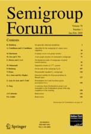

Editorial Work
I am an editor of SpringerBriefs in Mathematics.
I am an editor of International Journal of Algebra and Computation.

I am an editor of Semigroup Forum.
A Special Issue in Memory of Bret Tilson
Edited by J. Rhodes, S. W. Margolis and B. Steinberg
International Journal of Algebra and Computation
20
(2010), no. 2, World Scientific Publishing Co., Singapore pp.i-xx and 115-341.
Proceedings of the International Conference on Semigroups and Groups in Honor of the 65th Birthday of John Rbodes
Edited by S. W. Margolis and B. Steinberg
International Journal of Algebra and Computation
14
(2004), no. 5-6, World Scientific Publishing Co., Singapore pp.i-xii and 525-827.